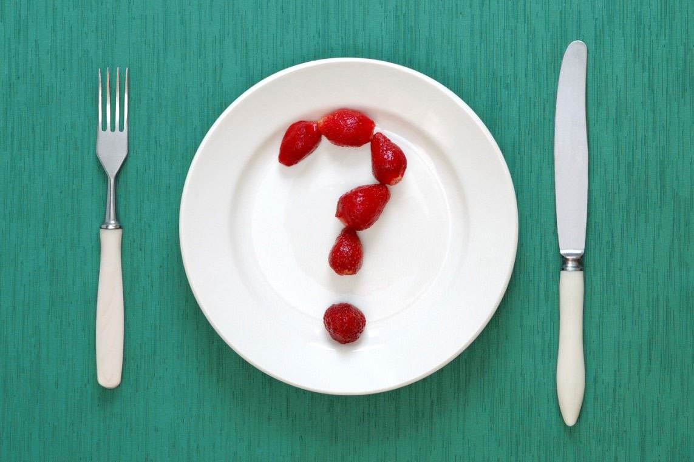

Psihologija i mršavljenje
Da li ste znali da je duši potrebna hrana isto kao i telu? Ukoliko ne prepoznajemo koje su ili u dužem periodu zanemarujemo svoje psihološke potrebe, može se desiti da nezadovoljstvo i prazninu koju osećamo, pokušavamo da prevaziđemo kroz zloupotrebu psihoaktivnih supstanci, kompulsivan šoping, seks, ali i prekomerno uzimanje hrane.
Psihološke gladi je identifikovao Erik Bern (Berne, 1973; K. Lič: Psihologija i gojaznost, Psihopolis, Novi Sad, 2014) ukazujući na potrebe koje nisu fiziološke prirode, ali koje je neophodno zadovoljiti da bismo se fizički i psihički razvijali, napredovali i osećali zadovoljeno. U suprotnom, nesvesno nastavljaju da utiču na naše misli, osećanja i ponašanje i mogu nas navoditi da se prejedamo ili štitimo debljinom. Bern je govorio o gladi za stimulusom, gladi za kontaktom, gladi za priznanjem (prepoznavanjem), gladi za strukturom, gladi za seksom, gladi za uzbudljivim događajima i gladi za vođstvom (vladanjem, moći). Različite vrste gladi su međusobno povezane i prepliću se.
Stimulus definišemo kao promenu u unutrašnjem ili spoljašnjem okruženju koja se može detektovati čulima i koja podstiče aktivnost ili energiju organizma. Ljudska bića ne trpe stanje čulne deprivacije, te ih glad za stimulacijom navodi na aktivnost kako bi je izbegli. Kao što dete od rođenja mora biti izloženo različitim stimulusima da bi napredovalo, tako je i odrasloj osobi potrebna čulna stimulacija, ali ona koja se opaža kao svrsishodna i smislena. Dakle, stimulacija može biti senzorna, kao i intelektualna i emocionalna. Ukoliko osoba ima problem prejedanja, može biti preporučljivo da „nahrani“ sebe nekim drugim prijatnim stimulusima (Leach, 2006) i pronađe zadovoljstvo u umetnosti, muzici, knjigama, prizorima prirode, pripremanju zdravih obroka hrane ili nečem drugom što će obezbediti odgovarajuću kombinaciju čulne stimulacije i smislene aktivnosti. Teži oblik problema postoji kada je jelo jedini način da se osoba umiri, odnosno kada su hrana i osećaj mučnine nakon prejedanja stimulusi koji potvrđuju postojanje.
Glad za priznanjem odražava potrebu da budemo primećeni i da pripadamo. U engleskom jeziku terminom strouk (stroke – milovati, gladiti) označava se jedinica socijalnog prepoznavanja ili priznanja, od pozdrava na ulici, osmeha, rukovanja ili klimanja glavom u znak odobravanja do bliskog emotivnog odnosa sa drugom osobom. Stroukovi predstavljaju „zamenu za dodir“, po analogiji sa fizičkom nežnošću i pažnjom koja se pokazuje prema deci. Pozitivni stroukovi predstavljaju pohvalu bića ili ponašanja, a negativni kritiku. Pošto nam je potrebno da nas drugi primete i obrate pažnju na nas, nedostatak pozitivnih stroukova nadomestićemo putem negativnih. Osobe koje imaju višak kilograma često su lišene pozitivnih stroukova jer su izložene predrasudama da su lenje, nemarne ili glupe, zbog čega ih drugi ignorišu, vređaju ili otvoreno odbacuju. Retko imaju priliku da čuju nešto lepo i pohvalno o sebi. Zbog niskog samopouzdanja i samopoštovanja često su sklone da otpisuju pozitivne stroukove („Ona je samo ljubazna, inače ne misli to stvarno“). Zbog toga uzimaju hranu kao zamenu za stroukove, odnosno nagrađuju ili teše sebe hranom umesto da svoja osećanja podele sa drugima i na taj način dobiju odobravanje, pohvalu ili utehu. Ovakvo ponašanje dovodi do još većeg gomilanja kilograma, čime se osoba nalazi u začaranom krugu iz kojeg nije lako izaći. Iako je neprijatno i destruktivno trpeti neslane šale na svoj račun i smejati se samom sebi zbog viška kilograma, može se desiti da osoba nesvesno usvoji ulogu „debelog, veselog klovna“, zabavljača u društvu upravo zato što joj to obezbeđuje bar nekakvu – iako negativnu - pažnju drugih i stroukove. Međutim, ovakvo ponašanje istovremeno sprečava osobu u tome da je drugi prihvate istinski onakvu kakva jeste. Otud strah da će nestati, postati neprimetna ili prazna ukoliko izgubi suvišne kilograme, jer je negativna pažnja ujedno i potvrda postojanja.
Fizički kontakt stvara osećanje povezanosti i prijatnosti. Mnoge osobe sa prekomernom telesnom težinom osećaju odbojnost prema samom sebi, koju projektuju na druge ljude verujući da su neprivlačne, ogromne i nezgrapne da bi ih neko zagrlio ili dodirnuo. Inhibiranost na planu fizičke bliskosti dovodi do smanjenog zadovoljstva u sferi interpersonalnih odnosa i seksualne aktivnosti. Osećanje praznine i usamljenosti osoba pokušava da prevaziđe uzimanjem prekomernih količina hrane.
Potreba za strukturisanjem vremena potiče iz težnje da kvalitetno i smisleno živimo i obezbedimo sebi dovoljno vrednih sadržaja koji će doprineti da se osećamo živo, nadahnuto, te da smo korisno i na pravi način utrošili svoje vreme. Potreba da sledimo lični plan i u život unesemo red, povezana je i sa svešću o prolaznosti i smrti, odnosno ograničenoj količini vremena kojom raspolažemo. Struktura vremena može da se bazira na radu i slobodnim aktivnostima, ili da podrazumeva vreme koje provodimo sa drugima, odnosno u samoći. Životni stil osobe koja se bori sa viškom kilograma često se svodi na preterano povlačenje i bežanje u izolaciju, čime osoba lišava sebe pozitivnih stroukova, kao i mogućnosti da ostvari bliskost sa drugim ljudima. S obzirom da bliskost predstavlja takvu vrstu odnosa u kojem postoji sloboda izražavanja svih osećanja, osoba ostaje uskraćena za tu mogućnost, što dovodi do stvaranja osećanja praznine koju osoba pokušava da ispuni hranom. Hrana može da se koristi i kao sredstvo putem kojeg osoba pokušava da uguši osećanje straha od odbacivanja ili napuštanja. Drugu vrstu opasnosti, pored nezdravog povlačenja predstavlja praznina usled nedostatka radnih zadataka i ciljeva, jer ljudi ređe padaju u iskušenje da preterano jedu kada im je um „zaposlen“ i kada su usmereni ka postizanju određenih rezultata rada.
Seksualnom aktivnošću se ne zadovoljava samo prirodni nagon, već i potreba za strašću, romansom i ljubavlju. Višak kilograma ponekad može da bude način kojim se osoba štiti od sopstvene seksualnosti. Seksualno zlostavljanje ili neadekvatan odnos roditelja prema seksualnosti dece ili adolescenata može da oteža razvoj pozitivnog odnosa prema seksu i prihvatanje sebe kao seksualnog bića. Prekomernom težinom gojazne osobe „drže“ druge ljude na distanci, jer naučeno verovanje glasi da biti gojazan znači biti neprivlačan, i obrnuto, biti mršav se karakteriše kao društveno poželjno. Ponekad gojazne osobe ženskog pola viškom kilograma sputavaju vlastite seksualne impluse verujući da je prekomerna kilaža dovoljna da zadrži muškarce na bezbednoj udaljenosti, i time čuvaju sebe od iskušenja i navodne promiskuitetnosti (Leach, 2006).
Ljudi imaju potrebu za novim, interesantnim dešavanjima, što je blisko povezano sa gladi za stimulusima. Mnoge osobe sa prekomernom telesnom težinom i problemom prejedanja vode dosadan, usamljenički život usled samonametnutih ograničenja i emocionalne zatvorenosti. Ponekad je njihova aktivnost ograničena viškom kilograma koji ih sprečava da se bave određenim sportovima, ili pak veruju da nemaju pravo na određene aktivnosti i zabavu zbog osuđujućeg stava javnosti, kao na primer da je sramotno da se skinu na plaži. Neki pridobijaju negativnu pažnju na račun gojaznosti ili započinju ko zna koju dijetu po redu, stvarajući iluziju da se u njihovom životu ipak nešto dešava, što je naravno štetno i samo privremeno zavarava glad za uzbudljivim događajima.
Postoje različite vrste moći, od one koju donose bogatstvo ili pozicija na poslu, do osećanja sposobnosti da upravljamo svojim životom i držimo stvari pod kontrolom. Moć može da znači da smo dovoljno važni da budemo primećeni, da imamo pravo da budemo „sada i ovde“ i da zauzmemo svoje mesto u svetu ravnopravno sa ostalima (Leach, 2006). Osobe koje se prejedaju ili imaju višak kilograma često se osećaju nemoćno u odnosu na impuls za prejedanjem ili u odnosu na svoju telesnu težinu, doživljavajući to kao problem sa kojim nemaju snage da se izbore, što umanjuje njihov doživljaj lične vrednosti i uspešnosti u odnosu na druge ljude. Međutim, pojedinim gojaznim osobama prekomerna telesna težina pruža osećaj moći čineći ih „velikim“ i dovoljno „moćnim“ da se nose sa težinom problema iz detinjstva.
Autor:
Svetlana Slepčev
Reference
Leach, Kathy (2006): The Overweight Patient – A Psychological Approach to Understanding and Working with Obesity. London: Jessica Kinglsley Publishers (Lič, Keti: Psihologija i gojaznost - Prevazilaženje gojaznosti. Novi Sad: Psiholpolis, 2014)
http://changingminds.org/explanations/needs/berne_hungers.htm